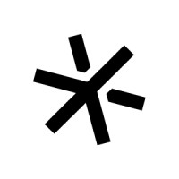
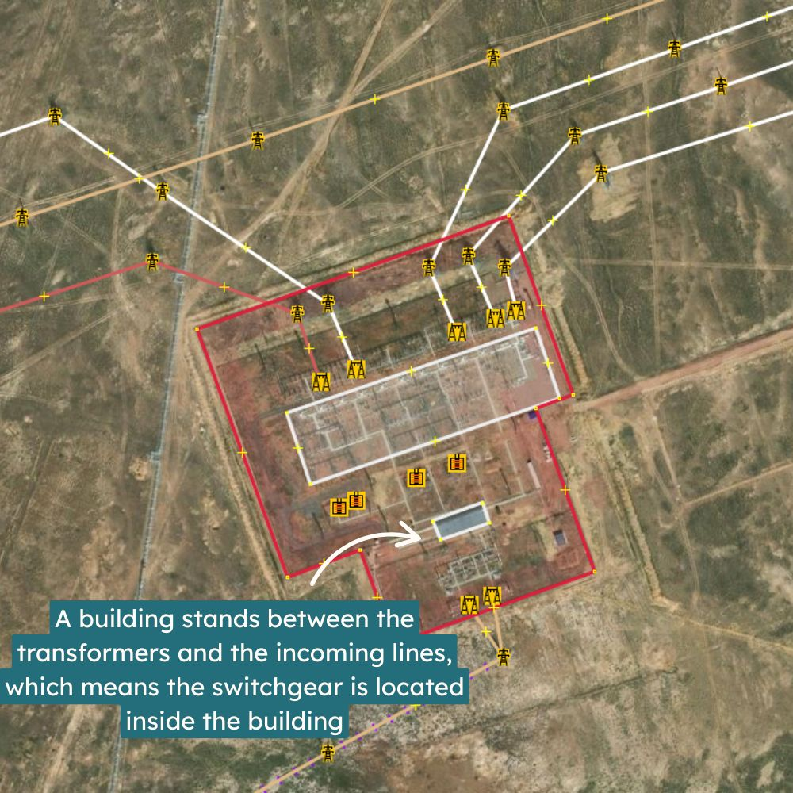
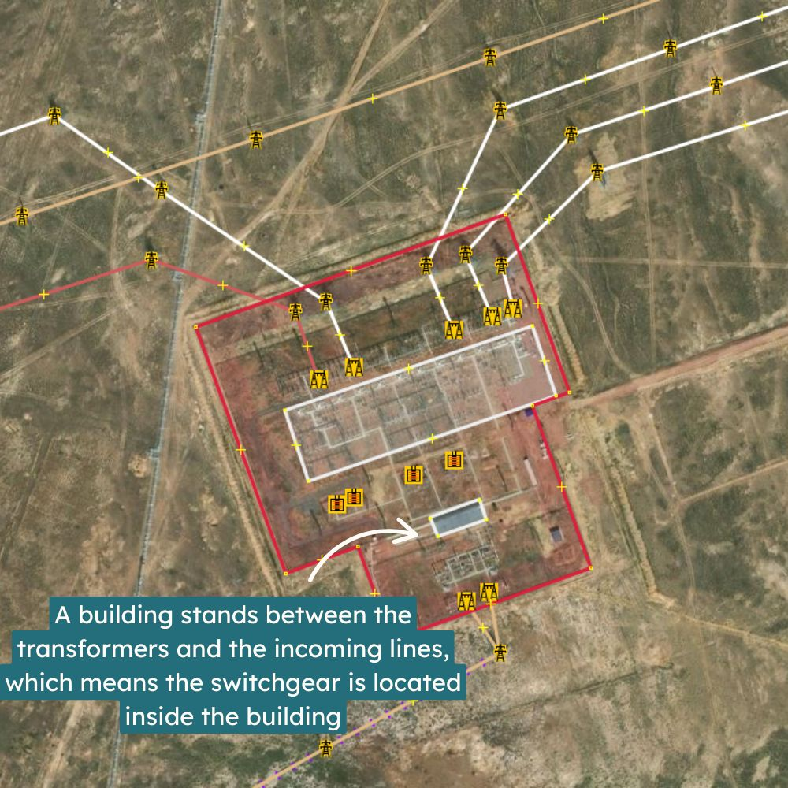
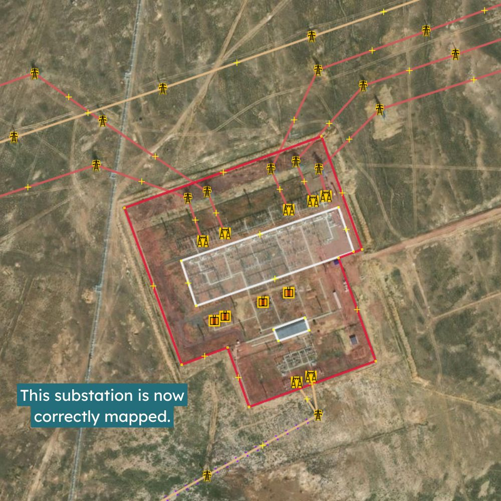
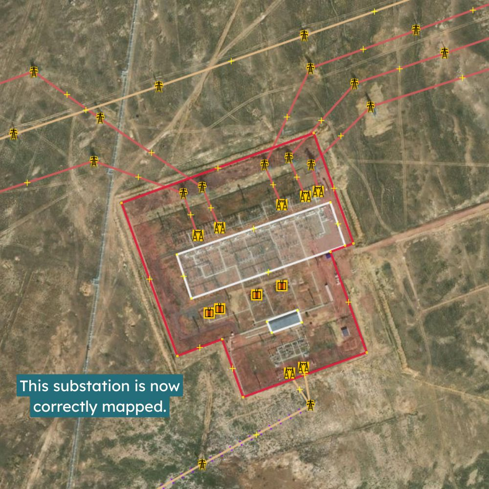

Impact
Across the globe, OpenStreetMap has proven its value in generating high-quality, open data to support sustainable development and energy access. Use the buttons below to explore that impact: who’s using the data, why it matters, and how we map the grid responsibly.
Strategic Use Cases: Energy, Disaster Response and Development
OpenStreetMap’s unique value in creating high quality data for sustainable development has been proven by multiple initiatives all around the world:


-
The Global Electrification Platform and Distributed Renewable Energy Atlas, developed and used by the World Bank, support rural electrification planning across 58 countries. The REZoning project helps to identify and explore areas with high potential for solar, onshore and offshore wind development projects for 249 countries. Using OpenStreetMap data on transmission lines, substations, roads, buildings and settlements, they help to identify off-grid populations and inform the planning of renewables and both grid and off-grid strategies. GEP-OnSSET, the Open Source Software behind Global Electrification Platform, relies heavily on electrical grid data of OpenStreetMap.
-
The World Bank's EnergyData.info website hosts over 1,072 energy-related datasets, 533 of which directly depend on OpenStreetMap data. The World Bank uses this data to finance and support energy infrastructure projects in low- and middle-income countries, including expanding energy access, modernizing power systems, and promoting clean energy solutions. It also underpins major publications and creates reports for Decision Makers such as Mini Grids for Half a Billion People.
-
The Humanitarian OpenStreetMap Team provides high-quality, open geospatial data to guide decision-makers during early disaster response. With over 419,000 volunteer mappers, HOT collaborates with satellite imaging providers like Maxar and humanitarian agencies like the Red Cross to ensure emergency decisions are backed by reliable, verifiable data. Especially as the extreme weather events become more frequent, access to accurate electrical grid data is increasingly critical for the Humanitarian OpenStreetMap Team.
-
The Energy Access Explorer is the first open-source, online, interactive geospatial platform enabling energy planners, clean energy entrepreneurs, donors and development institutions to identify areas of high priority for energy access interventions. With over 100 partner organisations and eight participating countries, including India, Nigeria and Ethiopia, it relies heavily on OpenStreetMap data, including transmission and distribution data.
-
The Energy Planning Group Library offers a range of tools and models created by the World Bank's Energy Sector Management Assistance Programme (ESMAP) to support the planning of electricity systems at more than 40 national and regional levels. Studies performed using this framework primarily utilise OpenStreetMap's transmission grid data. This framework has supported policymakers, planners and analysts working on renewable energy integration, power system flexibility analysis, long-term capacity expansion and multi-zone dispatch modelling.
Why OpenStreetMap Matters for the Electrical Grid?

OpenStreetMap’s electrical grid data is widely used by grid operators, academic institutions, government agencies, local authorities, and private organizations. It plays a crucial role in energy modelling and planning, shaping policy development and guiding investment decisions.
These models help assess technological options, evaluate policy impacts, and map out pathways to full electrification, especially in developing countries. They're also critical for driving decarbonization and sustainable development. However, their accuracy depends heavily on the quality and completeness of the data they rely on.
OpenStreetMap for Smarter Energy Modelling
One of the most prominent use cases of OSM grid data is in energy modelling tools. These tools help simulate how energy systems behave under different scenarios, from policy shifts to climate targets.

PyPSA-Earth is the first energy model to enable regional studies based on OpenStreetMap to be carried out across the globe. The data is clustered into larger regional electrical hubs to simplify the power system model and improve computational efficiency. However, the energy potential of entire regions is underestimated if lines and substations are missing. Therefore, improving the current state of the OpenStreetMap's electrical grid data significantly enhances the reliability and effectiveness of this planning tool for energy studies in regions all around the world. Initial attempts to use OpenStreetMap data for energy modelling are being made by the German Aerospace Center with the SciGrid project starting in 2014. Afterwards, projects like OSMoGrid, GridTool, osmTGmod and OpenGridMap have continued this development, first focusing on the German electrical grid.
Using OpenStreetMap as Ground Truth for AI training

The high quality of OpenStreetMap data, coupled with regular human validation, makes it highly attractive for AI training. Recent statistics have shown that both OpenStreetMap and Mapbox, which largely depends on OpenStreetMap data, are in the top 10 data sources for LLM training. Examples of cutting-edge projects in the energy sector include the Solar Asset Mapper, Ground-Mounted Solar Energy in the United States and Global Renewable Watch, which uses polygons from OpenStreetMap to create a mask that defines the ground truth data for training detection models. Also for the detection of global wind turbines with Sentinel-1, OpenStreetMap's polygon were the main source for training data. OpenStreetMap also provided the ground truth for the global detection of substations using Sentinel 2.
Beyond energy infrastructure, OpenStreetMap has proven invaluable for AI applications in urban planning, disaster response, and environmental monitoring. Its detailed road networks, building footprints, and land use classifications enable models to learn spatial relationships and make accurate predictions in real-world scenarios.
Trusted by Leading International Organizations
Major international organizations rely on OpenStreetMap data for large-scale planning and decision-making.
The World Bank and International Energy Agency (IEA) use OSM in regional and continental energy studies—especially in areas where no other open infrastructure data exists.
Making this data freely available not only unlocks social value for planning but also economic value for private sector innovation.
Recent policy recommendations:

IEA Key Policy Recommendation in 2024: "Improve data reliability and availability to better assess and manage risks for clean energy projects in emerging markets and developing economies."
How to implement the COP28 energy goals
IEA Actionable Recommendation in 2025: "Policy makers, regulators and utilities must support institutions, regulations, technical standards and collaboration platforms to build consensus on effective planning approaches that take full account of the changes in the profiles of power systems and their operations. Encouraging Transmission System Operators to share procurement and capacity planning data with regulators will further support informed policymaking."
Building the Future Transmission Grid
United Nations ESCAP Recommendations in 2025 "Open access to non-sensitive energy data, including geospatial mapping of grids, renewable resource availability, and interconnection status, would also facilitate more inclusive stakeholder engagement and private sector participation. Transparent data practices are especially important for regional collaboration, as they allow neighboring countries to align plans, assess complementarities, and coordinate investments."
The Role of Grids in Energy Transitions
Energy Grids Shape Our Future

Energy infrastructure is central to solving today’s biggest challenges. Reliable and open infrastructure data directly supports the adoption and success of clean energy projects globally. These projects are being accelerated for several critical reasons:
- Climate mitigation: Fossil fuels account for roughly 70% of global greenhouse gas emissions.
- Resilience: Clean energy strengthens resilience against climate impacts and extreme weather events.
- Energy security: Reducing reliance on imports enhances national energy independence, especially from politically unstable regions.
In short: the map matters. OpenStreetMap enables more informed decisions, faster clean energy deployment, and more inclusive planning, especially where the need is greatest.
Growing Academic Recognition

To understand the influence of OpenStreetMap's electrical grid data in research, we analysed Google Scholar for publications combining OpenStreetMap with terms like power grid, electrical grid, renewable or energy model.
- 10,700 publications since 2005 included combinations of these keywords.
- A total of 2,460 publications were released in the past year alone, demonstrating a rapid increase in academic interest and recognition of the power of OpenStreetMap data.
Why Open Grid Data Matters?
Access to open and accurate data on electricity infrastructure is essential for effective planning, development, and collaboration, especially in the context of the global energy transition. The benefits are wide-reaching, from accelerating clean energy deployment to improving equity in energy access.
Closing Data Gaps in Developing Countries

In many low- and middle-income countries, data on electrical infrastructure is often outdated, incomplete, or fragmented, making it difficult for governments, utilities, and planners to take informed action.
Even in high-income countries, while data may be more comprehensive, it is often not publicly available or limited by restrictive licensing. This hinders transparency and the ability to collaborate or validate results.
Open data helps overcome these barriers by ensuring that:
- Infrastructure planning is more inclusive and cost-effective.
- Datasets can be cross-checked, reused, and improved collaboratively.
- Policymakers and planners have a reliable foundation for decision-making.
Building Trust Through Transparency and Traceability
Unlike proprietary platforms, OpenStreetMap's unique mapping methodology allows traceability and verifiability of data sources:
"At the core,
verifiabilityis that everything you do can be demonstrated to be true or false by other mappers."
Transparent planning, backed by open data, builds public trust and institutional confidence. Research shows that transparency increases public acceptance of infrastructure projects (Ciupuliga & Cuppen, 2013).
Thanks to its collaborative model, OpenStreetMap enables local communities, NGOs, and governments to contribute directly. This leads to filling gaps, correcting errors, and improving the quality of infrastructure data.
For example, the YouthMappers initiative in Sierra Leone mobilized local students and organizations to map the power grid, helping electricity providers reduce planning costs and improve infrastructure deployment (Charles, 2022).
Open grid data is also instrumental in identifying off-grid communities, allowing policymakers to target investment and expand access more effectively (Arderne et al., 2020).
Saving Millions While Expanding Access

High-quality open data doesn't just improve access, it also reduces costs.
OpenStreetMap's data has enabled the government and local authorities to create high-quality datasets without having to pay for expensive proprietary ones.
For example, the US Department of Energy and partners used open-source data to develop the "Electric Energy Infrastructure Data", resulting in "estimated savings of 65% (~2 million dollars) over proprietary datasets" (Singh et al., 2023). That’s a clear economic argument for open-source approaches.
Examples from High-Income Countries
In most developed countries, publishing high-resolution, open datasets on the transmission grid has been common practice for more than a decade. For example:
- ENTSO-E provides a pan-European Transmission System Map with georeferenced infrastructure data.
- RTE, the French grid operator, publishes its grid topology, including 5-minute resolution time-series data on network operations (RTE on GitHub).
- Enedis, the French distribution system operator, committed to Open Data since 2015, is joining forces with OpenStreetMap France to make its grid data available and encourage crowdsourcing.

-
The US Department of Homeland Security and other agencies publish national transmission grid data to support emergency response, policy development, and economic planning. These open datasets trace back to legislation from the 1990s that aimed to improve geospatial data sharing (source). Within this dataset, OpenStreetMap is cited as the primary source for 24% of U.S. transmission lines.
-
The US Homeland Infrastructure Foundation-Level Data shows strong alignment with OpenStreetMap data, demonstrating how open contributions can match official datasets in coverage and accuracy.
-
The US Department of Energy mentions the following in its Transmission Interconnection Roadmap: as Goal #1: Increase data access, transparency and security for interconnection.
-
The Lawrence Berkeley National Laboratory: "The grid interconnection process would benefit from greater transparency afforded by better data. It is difficult even to assess what works and doesn’t work in the process, let alone successfully navigate the process, without better data. Data are a critical need during this time of active reform"
Tip: To find more open datasets about the electrical grid released by national authorities or electrical grid operators, check out our curated list with more than 300 maps.
Who is using OpenStreetMap Grid Data?
How does mapping have an impact? When you map towers, substations, and power plants in OpenStreetMap, you are essentially adding valuable data that is used by many different entities. Below is a curated list of organisations and projects that have had an impact and have used this data.
Disclaimer: These organisations are not affiliated with MapYourGrid nor endorse it. All logos and brand names are the property of their respective owners. Usage here is for informational purposes only, identifying organisations that utilise OpenStreetMap data.
International Energy Agency 

Latin America Energy Outlook Interactive Map (Click Me)
Link - Latin America Energy Outlook Interactive Map (link)

US Department of Homeland Security 

World Bank 

PyPSA-Earth  + PyPSA-Eur
+ PyPSA-Eur 
PyPSA-Earth and Europe use OpenStreetMap data for energy system studies all around the world. (Click Me)

Enedis 
The French utility company Enedis, operating the electricity distribution network, mapped power poles and substations with the help of a strong local OpenStreetMap community. (Click Me)

Global Renewables Watch 
The Global Renewables Watch maps and measures renewable energy installations and their estimated capacities at the subnational, national, and global levels. The machine learning behind the detection process is mainly trained using OpenStreetMap data. (Click Me)

CONAHCYT (Gobierno de Mexico) 

Canada Energy Regulator (CER) 

European Commission - Joint Research Centre 
Africa Knowledge Platform (Click Me)

More Information - The electricity network data on the image is a mix of World Bank and OpenStreetMap data
IRENA 

Global Wind Atlas 

Fraunhofer ISE 

ESMAP, IFC, VIDA 


GridRaven 

windPRO 
windPRO is an industry standard for designing, planning, and evaluating wind and solar energy projects. (Click Me)

ETAP 
ETAP® provides market-leading software and hardware solutions serving all stages of the electrical system lifecycle for utilities, infrastructure, industries and buildings. (Click Me)

GlitreNett 
DataArena intends to inform and provide information about the status of the Norway electrical grid capacity. (Click Me)

MAPOG 

dvlp.energy 
With dvlp.energy, you can quickly and easily find the right space for your solar, wind or storage projects. (Click Me)

Roseau Technologies 
Modern and ergonomic software solutions for straightforward electricity distribution grid design. (Click Me)

Woza-Labs 
Predicterra now includes global coverage of energy infrastructure — from distribution grids and substations to power plants and transmission corridors. (Click Me)
Federal Ministry of Power Nigeria 

Rosetta Analytics 
Atlas 

MapStand 

{kind=link}
{kind=link}
{kind=link}
Continuum Industries 
Optimize planning for your transmission, pipeline routing and site selection projects. (Click Me)

BirdView 
Birdview Energy - Investment-grade BESS revenue and grid risk assessment before FID
{kind=link}
Responsible Grid Mapping: Understanding Risks and Mitigation
Mapping electricity transmission infrastructure is essential to reaching universal energy access, strengthening climate resilience, and enabling clean energy planning. But openness, especially in the realm of infrastructure, naturally raises questions about risk and security.
At MapYourGrid, we take these concerns seriously. This section explains :
- What risks actually exist with open grid data,
- Why the benefits of responsible mapping far outweigh them,
- How we mitigate potential harms through careful, community-informed practices.
For the past 17 years, transmission grid data has been created on a global scale in OpenStreetMap without any major legal issues being identified. Today, MapYourGrid is closing the gap for low-to-middle income countries, helping them to increase their coverage from around 70% to 98%.
Why Infrastructure Mapping Raises Concerns
Electric transmission infrastructure is widely regarded as critical to national and regional stability. It powers economies, supports healthcare systems, and connects communities.
So it's reasonable to ask: Does publishing the location of power lines and substations expose a system to new threats?
This is a valid concern. While OSM mapping focuses only on non-sensitive, publicly visible features, it’s important to understand where the line is drawn.
Most Grid Infrastructure is Already Publicly Visible
In reality, the vast majority of grid infrastructure is already accessible through:
- Satellite imagery platforms like Google Earth and Bing Maps.
- National and regional planning documents.
- Government datasets, such as the U.S. HIFLD database or the EU's ENTSO-E platform.
- Commercial mapping services, which label substations and transmission corridors.
OpenStreetMap does not introduce new visibility, but rather transforms existing imagery into usable, traceable, openly licensed data. This ensures high quality data through traceability and verifiability. OpenStreetMap provides structured, standardised, openly licensed data that is accessible to communities, researchers, planners and public institutions.
The Greater Risk: Lack of Data

For much of the world, the absence of reliable, accessible grid data creates more harm than openness ever could. In countries with expanding populations, growing urban centers, or rural electrification needs, decisions about where to invest in infrastructure depend on having accurate spatial data.
Without it:
- Electrification efforts stall due to uncertainty in grid reach and capacity.
- Renewable energy developers face delays or suboptimal siting.
- Emergency response teams cannot plan around real-world grid layouts.
- Public agencies lack the tools to ensure transparency and resilience.
Mapping transmission infrastructure in OpenStreetMap helps close this data gap.
Our Approach to Risk Mitigation
MapYourGrid implements a layered, context-aware framework to ensure that mapping serves the public good while respecting national sensitivities and community priorities. Read more about this in our Good practices for mapping.
Community Consent and Local Alignment
We motivate mappers to engage directly with regional OpenStreetMap communities. We provide training, host collaborative events, and support in-country mapping leaders to ensure that each initiative reflects local knowledge, laws and priorities.
Clear Boundaries on What We Map

We focus strictly on features that are:
- Publicly observable in satellite imagery.
- Relevant to energy planning.
- Safe and appropriate for open mapping.
We map:
- Power line routes.
- Power tower locations.
- Power substation boundaries, and equipment that allows to determine power line voltages.
- Voltage classifications.
We do NOT map:
- Indoor substation interiors or outdoor substation equipment not required to determine power line voltages, such as fencing.
- Control systems or communications infrastructure.
- Security or surveillance features.
Switchgear equipment and transformers are only mapped to determine power line voltages and number of circuits, when no other information allows us to do so. More detailed and technical mapping within substations should only be carried out in collaboration with local mappers and utility operators. This ensures that OSM grid data is useful without compromising operational or physical security. Detailed mapping of busbars, detailed routing and circuits within substations should only be carried out in collaboration with local mappers and utility operators.
Substations and other power-related infrastructures are industrial sites, typically closed to the public and posing serious risks such as electrical hazards, heat, exposure to chemicals, or death. Information gathering on-site should always be done safely and in full compliance with local regulations and warning signs. MapYourGrid does not encourage or expect contributors to enter restricted or hazardous areas, or to trespass fences or gates under any circumstances.
Illustration:
To illustrate why mapping substation equipment can be essential to determining power line voltages, here is a snippet of one of our tutorials :
{kind=link}


 


 

Data Validation and Version Control
Every contribution to OpenStreetMap is timestamped, attributed, and fully reversible.
The OSM platform includes built-in tools to detect suspicious edits, and MapYourGrid-supported projects include an additional layer of human quality control, expert review, and automated validation tools.
This model promotes transparency and reduces the risk of error or malicious contributions going unnoticed.
What the Evidence Shows
Research and operational experience from agencies like the U.S. Department of Energy and the International Energy Agency shows that :
- Most disruptions to power grids are caused by extreme weather, aging infrastructure, or coordination failures.
- Physical and cyber attacks are typically unrelated to the kind of public infrastructure data found in OpenStreetMap.
- A lack of data often worsens the consequences of these risks by delaying coordination and limiting visibility during emergencies.
Comparative Overview
| Dataset | Access | Source | Security Level | Grid Coverage |
|---|---|---|---|---|
| OpenStreetMap (OSM) | Public | Community + public imagery | Moderate | Transmission + Distribution |
| HIFLD (US DHS) | Public/Restricted | Government + OSM-derived | Controlled | Transmission only |
| CEII (FERC, U.S.) | Restricted | Grid operators | High | Transmission only |
OpenStreetMap data is often used to validate or supplement these official datasets, not replace them.

Supporting Responsible Openness
For donors, researchers, and institutions that want to support open infrastructure data while mitigating risk, we recommend the following:
Do:
- Emphasize climate resilience, public benefit, and equity.
- Highlight real-world examples where open data improved planning or disaster response.
- Work closely with regional stakeholders and community mappers.
- Fund training, peer review, and documentation improvements.
- Understand the need for careful stewardship and legal awareness.
Avoid:
- Supporting mapping in high-conflict areas.
- Treating openness as an all-or-nothing issue.
Final Thoughts
Transmission grid mapping in OpenStreetMap is already contributing to real-world progress, from modelling electrification pathways in sub-Saharan Africa to enabling renewable energy siting in Southeast Asia.
By balancing transparency with care, and openness with accountability, we believe it's possible to expand access to infrastructure data while minimizing risk. The global clean energy transition depends on this kind of open, responsible collaboration.